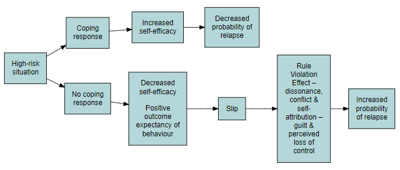
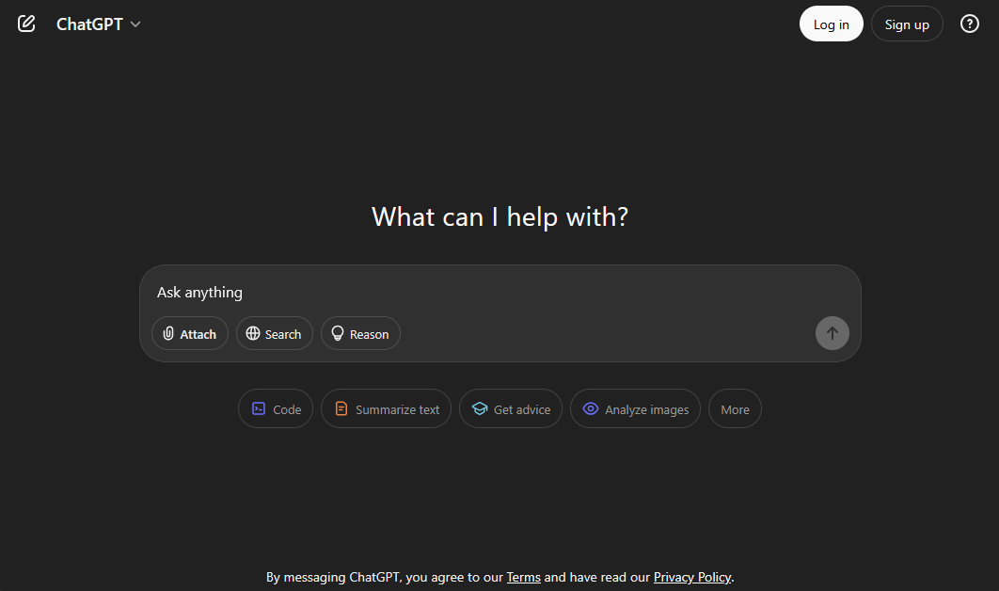

Automating Support Messages with LLMs for AUD Recovery
2025-05-09
Introduction
Context
- 30+ million adults with active AUD
- 140,000 annual deaths
- $249 billion economic costs
I’ve developed an R script that leverages cloud-based LLMs to generate personalized support messages for individuals with AUD
The Paradox:
- Evidence-based interventions exist with highest level of empirical support
- Challenge is delivering ongoing support for a complex, nonlinear recovery
The Long-Term Support Challenge
Successful recovery requires lifelong monitoring, but resources are insufficient for long-term clinician-guided care
- Machine learning models can predict lapses (AUC 0.91)
- Interpretable methods identify patient-specific risk factors
- Support can be anchored to the Relapse Prevention model
The Engagement Imperative
Personalized Messages → Increased Engagement Generic Messages → Limited Engagement
The Solution: LLM-Powered Personalization at Scale
Making predictions from ‘black-box’ models more transparent improves acceptance and trust in machine learning recommendations
This can only be scalable if personalization can be done at a large scale, which LLMs allow us to do
Does ChatGPT Dream of Electric Sheep?
“Young man, your resilience and commitment to recovery over these four months are truly commendable. Developing healthy coping mechanisms to manage stress is a critical step towards long-term success, and I am confident in your ability to persevere.”
Does ChatGPT Dream of Electric Sheep?
“Young man, your resilience over the past four months is commendable, and I encourage you to explore stress management techniques such as deep breathing exercises, mindfulness practices, or physical activity to help you navigate challenges effectively on your recovery journey.”
POV: Prompt Engineering
Introducing: flight_support.R

Example System Prompt:
“You are a chatbot in an automated recovery support app for people with alcohol use disorder. You are writing a daily message from the app that will provide the person with information from a machine learning model about how they are doing in their recovery today. The message should be 3 to 4 sentences long and written for someone with an 8th grade reading level. Do not explicitly greet the person, and do not refer to yourself in the message. Do not provide advice.”
Example User Prompt:
“Write a message to tell this person that they are at low and increasing risk for drinking today. This person prefers messages that legitimize their distress by acknowledging their feelings as reasonable, validating that their experience is difficult, and assuring them it’s okay to express these struggles.”
Sample Usage!
Output Pt. 1
$system
[1] “You are a chatbot in an automated recovery support app for people with alcohol use disorder. You are writing a daily message from the app that will provide the person with information from a machine learning model about how they are doing in their recovery today. The message should be 3 to 4 sentences long and written for someone with an 8th grade reading level. Do not explicitly greet the person, and do not refer to yourself in the message. Do not provide advice.”
$prompt
[1] “Write a message to tell this person that they are at low and increasing risk for drinking today. This person prefers messages that legitimize their distress by acknowledging their feelings as reasonable, validating that their experience is difficult, and assuring them it’s okay to express these struggles.”
Output Pt. 2
$response
[1] “Some days can feel heavier than others, and it’s completely understandable to feel that way. The challenges you’re facing right now are real, and it’s okay to feel frustrated or overwhelmed. It’s hard work to navigate these moments, but acknowledging your struggles is a sign of strength. You’re allowed to feel what you’re feeling, and it’s okay to let those emotions out.”
[2] “It looks like today might feel harder than usual, and the urge to drink could be growing. Feeling this way doesn’t mean you’re failing—it’s a natural part of the process, especially when things feel overwhelming. Recovery can be tough, and it’s okay to feel frustrated or worn down. Your feelings are valid, and it’s important to let yourself acknowledge them.”
[3] “It looks like today might be harder for you, and that’s completely understandable. Feeling the pull toward drinking can be tough, especially when emotions or stress are running high. What you’re going through is valid, and it’s okay to acknowledge how challenging this feels. You don’t have to push those feelings away—letting them out can be part of moving through this moment.”
Conclusion
Next Destination
Technical enhancements:
Cache Support
Integration with model information systems
Methodological enhancements:
Tidy-text/NLP analysis of messages
Continued prompt engineering
Thank you & Questions
- Aviation-themed R interface for Microsoft Copilot
- Supports the lab’s mission to optimize recovery care
- Enables large-scale, personalized message generation
- Part of a broader innovation in digital therapeutics
Mini-Prac